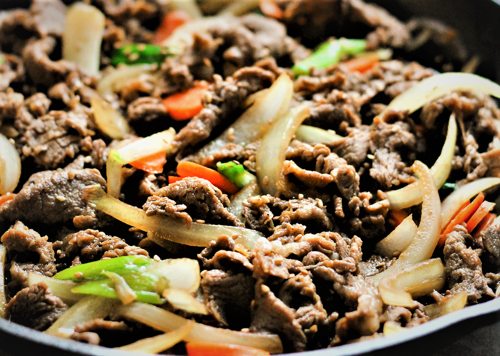

Bulgogi is an amazing savoury Korean beef dish that is tender and juicy with sweet, savory smoky, and nutty flavours!

Background Story
Bulgogi (pronounced bool-goh-gee with a hard g) is a Korean beef dish that literally translates to "fire meat". It is a Korean dish
that is made from thinly marinated slices of beef, sometimes pork, that is cooked over a grill or a stove-top griddle. However,
in home cooking, frying in a pan is the best route to take. It is one of the most popular and well-known Korean traditional dishes.
While throughout times, and depending on various regions, bulgogi can be prepared in various ways. This recipe will focus on creating an
authentic and most common way of creating one of Korea's national dishes. This recipe serves 4-6 peoples!
Korean Substitutes
Korean supermarkets will sell thinly sliced pre-cut beef specifically for bulgogi, and other dishes alike. However, most
grocery stores do not have this option, or have a butcher on-site. This is an easy fix! All you will need is a cut of tender beef.
Sirloin, beef tenderloin, or rib-eye is preferred. You will want to sharpen that knife for this part. Take your beef, wrap it in
plastic wrap, and freeze for about 2-3 hours. Freezing is important since we will be wanting to cut the items very thin. Remove the
meat from the freezer and begin slicing against the grain. 2-3mm or 1/8 of an inch is the desired thickness.
The ingredient list also called for a Korean or asian pear. If this is unavailable, use a regular pear or an apple! While the fruit
does add some sweetness to the dish, we are looking for the acidity of the fruit. The main purpose for this ingredient is to tenderize
the meat while it is marinating.
How to prepare and eat!
Bulgogi, as it's name, is typically cooked with fire. So a traditional barbecue is ideal to get some great char and get some smokey
flavour. However, depending on location, barbecues are not great for every season. And once you try this recipe, this will be a year
round dish. Cooking on a pan does have it's bonuses. Pan cooking allows for juices to be released and kept throughout the entire cooking
process. Something that lacks of the fire grilled barbecue. If you want a great combination of both the smoky flavour, and extremely juicy
beef. Try opting for a well-seasoned skillet. Keep the portion of meat you are cooking to a minimum as too much meat equates to too much
juice. That will take away the ability of creating a smokey flavour. The key is to have that skillet on high heat before adding the meat.
This will create a carmelization of the marinade, and providing that smokey char.
The best part. How to eat. The traditional way of eating bulgogi, is pairing the dish with a bowl of rice, an ample amount of banchan (side
dishes), leaf lettuce, perilla leaves, and ssam-jang (korean dipping sauce). Koreans will typically make a ssam (wrap) with the bulgogi.
It's easy! Just grab yourself a leaf lettuce, lay a perilla leaf on top, add some rice and whatever banchan your heart desires, some
ssam-jang, and a serving of that delicious bulgogi. Wrap it all up and dig in! While this is a great way, and the best way in my opinion.
Bulgogi can be used in many different ways. Think outside of the box! Tacos, sandwiches, salads, you name it!
Ingredients + Instructions
(Serves 4-6 people)
MAIN
- 800 g / 1.76 pounds rib eye or top sirloin (or any tender prime beef cut), thinly sliced, 2mm to 3mm (1/8 inch) thickness